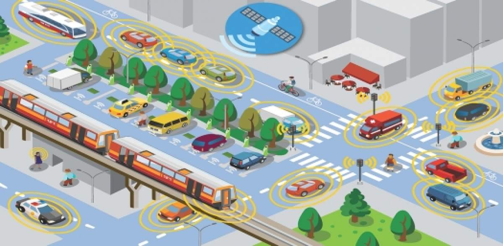

Intelligent Transport Management System

Fleet industry is in a transition mode and is rapidly changing. Constantly emerging technologies and trends are reshaping the fleet industry in all aspects. Cost reduction and risk management are the primary objectives of every fleet management company. To reduce costs, improve supply-chain visibility, maintain efficiency & safety standards, and provide compliance with government regulations, enterprises are looking to telematics technology. This technology promises a golden ticket for enterprise’s relentless quest for efficiency. The need of the hour is to have a modular, flexible, & end-to-end solution for intelligent management and control of your fleet.
What is Rollz ITMS Software?
Fleet Management Software is an administrative approach that allows the enterprises to organize and coordinate their fleet operations with an aim to improve efficiency, reduce costs, and provide compliance with government regulations. It is an end-to-end service that provides fleet managers a deep understanding of the state and use of their fleet in real time and further helps to prevent vehicle failures and repairs.
Fleet tracking system:
Fleet tracking system is GPS enabled vehicle tracking software that helps to monitor and track the fleet of vehicles. Deploy Rollz Fleet Tracking System and get an holistic view of all your fleets that includes Geo-fencing, Real Time Monitoring, Route Planning, Trips Reports, Driver Behaviour Data, Dashboard, Admin Panel, SMS/E-mail notification, among others, at your fingertips.
How We Can Help?
Retail
Online shopping is the latest mantra today and will continue to rule as time goes by. As the business grows, so shall the shipment and delivery mechanisms. With e-commerce merchants becoming a significant part of our daily life, it is important for them to ensure appropriate, speedy, cost effective and seamless delivery schedules, which faces its own set of challenges. To overcome such challenges, we assist the fleet owners on the go with a robust and scalable GPS enabled Rollz Fleet Tracking and Management Solution exclusively designed for the e-commerce sector.
Oil & Gas/ Mining
Transportation of inflammable materials is considered to be one of the challenges that tops the list of hazards when it comes to Oil and Gas logistics. Oil being flammable, needs to be transported with utmost care and security and poor handling may lead to extensive lose or even pose a threat to human life. Rollz Fleet Management Solution does more than just show where your vehicles are – from analyzing the revenue earned by keeping the vehicles on the road to knowing which aspects of your operations are draining your profits, you have a 360-degree understanding of your operations.
Food & Beverages
Food safety is crucial, especially when dealing with refrigerated items that require specific tolerances of temperature in order to guarantee food quality. Increased focus on quality, rapidly changing market demands, maintaining the quality of the product during transit, and increased competition is driving the cold chain businesses to be more flexible & efficient. Temperature-sensitive cold chain products such as fresh foods, vaccines, serums and the likes, require constant temperature monitoring and more innovation to ensure quality delivery. Even a small temperature variation during transportation or faulty refrigeration can turn product investment into a hefty liability. Rollz Fleet Management Solution helps the businesses to reduce losses, save costs, and enhance efficiency by tracking the real-time location of the vehicles and by allowing the fleet managers to monitor the temperature of the cargo.
- Detailed reporting for ELD and compliance
- Real-time temperature monitoring of goods
- Alerts in case temperature and humidity fall below or rise above the threshold
- Improved dispatch process
- Prevents theft, loss, or spoilage
- Helps to track the status of engine & refrigerated unit while in use
- Helps enable compliance with the food safety standards like FSMA
- Ensure time sensitive deliveries
Healthcare
Can you imagine a healthcare system with a supply chain that doesn’t work? Unthinkable, right? But, believe it or not, healthcare is an industry that has usually been working with suppliers at the edge of compliance, mainly because of high costs and inefficiencies. Fleet of emergency medical vehicles is of utmost importance to the world’s fastest growing healthcare industry. In order to provide timely curative & preventive care to the patients, keeping the emergency medical vehicles in the top working condition is of extreme priority. To improve the overalloperations by providing emergency and non-emergency medical transport team’s real-time tracking of vehicles and equipment to generate accurate and regulation compliant trips, switch to Rollz Fleet Management Solutions, NOW!!
- Live map ambulance location tracking
- Optimal dispatch and efficient navigation
- Automated routes and vehicle assignment from the distress alert location
- Reduced response times in the 'golden hour'
- Vehicle maintenance through timely service to keep it in top working condition
- Tracking fuel spend & optimizing costs through fuel management
- Driver idle time monitoring
Education
With the increasing population and traffic in cities, educational institutions & administrations are under pressure to provide a safe, reliable journey for school children in the school buses or vans. Managing school buses is a hectic process and requires a systematic process, well maintained vehicles, organized drivers and constant monitoring to transport children safe and securely to and from schools. Our solution has been designed to improve the safety, optimize the operations, and reduce the maintenance costs. Rollz Fleet Management Solution continuously monitors school/college buses in real time, unauthorized trips, and send alerts via email & SMS on any deviation, etc. In addition, our solution also enables RFID integration to track the entry and exit of the Institution vehicles.
- Real time mapping of all integrated vehicles in single screen
- Geo-fencing to avoid route deviations for passenger safety
- Predictive route planning trips for efficient utilization of assets
- Pre and post trip notifications
- Allocate school buses optimally, depending on their capacity
- Share LIVE trip status
- Vehicle under surveillance
- Panic button for emergency services
- Over speeding and stoppage reports
- Driver management
Government /Utilities
Municipalities and Government Agencies often are entrusted with the task of fulfiling public demands on delivering quality public services within their tight budgets. With minimum funds, aging vehicles, demanding regulations, and maintaining a positive public image are some of the challenges faced by the Government. WebNMS Fleet Management Solution can help ensure less time is spent managing data and provide complete visibility of their fleet operations, reduce fleet costs without threatening the performance, fleet related assets and equipments to help improve efficiency, reduce costs and measure performance. Our solution also helps the government to streamline their operations by managing their vehicles efficiently, enables compliance to specific standards, helps in running a greener fleet, and enhancing the safety of the assets & staff.
- Reduced asset downtime
- Better fuel management
- Tracks CO2 emission
- Enhanced safety of the assets and the staff
- Efficient fleet management
- Preventive maintenance